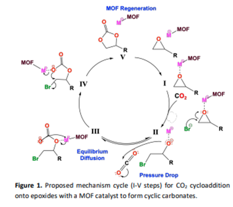

Active Ruthenium-based Metal-Organic Framework Catalyst for CO2 Fixation onto Epoxides
Summer 2022-Current
Click here for the published journal article
Unsurprisingly, increased fossil fuel over the last century have garnered the concerns of climate activists in a widespread effort to mitigate greenhouse gas concentrations within the atmosphere. The need for a sustainable, circular carbon economy has become more critical within the past decade. An optimistic solution employed by several industries utilizes the sequestration of CO2 in catalyst-mediated reactions to produce value-added products. Metal-organic frameworks (MOFs) have been demonstrated to be an effective and sustainable pathway for CO2 conversion. However, ongoing investigations for more active catalysts and an in-depth understanding of their catalytic activity are necessary to combat the accelerated concerns regarding global warming.
MOFs are a class of 3-dimensional porous coordination polymers consisting of metal ions or clusters covalently joined by organic ligands.6 MOFs have been widely explored as catalysts due to their large surface area, Lewis acidic metal sites, confined pore spaces and high structural tunability. The formation of value-added cyclic carbonates through cycloaddition of CO2 to epoxides has been widely investigated using varying MOFs. Cu-HKUST-1 (Cu3(btc)2; btc3-= 1,3,5-benzenetricarboxylate), with its high adsorption capacity and versatility in transition metal sites, is a prime example of such catalyst with high research potential. In the past, other btc-based MOFs have been reported as catalysts for epoxide cycloaddition, primarily involving 2+ transition metals, such as Zn, Co, and Ni. Consequently, the activity of these different Lewis acids is under intrigue to develop a more effective catalyst. Ruthenium (Ru) is an attractive catalyst due to its large range of oxidation states (1+ to 8+), stability, and higher catalytic activity under lower temperatures and pressure compared to other metals. Homogenous ruthenium catalysts have previously been used to catalyze several organic reactions, including the conversion of thioesters to thiols and alcohols and the hydrogenation of terminal epoxides to secondary alcohols. Despite this, catalytic Ru-based MOFs are seen to a lesser extent in the literature, likely due to the cost of Ru. From an industry standpoint, catalyst selection must balance production rates at specific operating conditions with the expense of the catalyst. Herein, we report the use of ruthenium-derived HKUST-1 (Ru-HKUST-1) in the 2/3+ oxidation state as an active catalyst for CO2 cycloaddition with epoxides to form cyclic carbonates under mild conditions.
To evaluate the catalytic activity of MOFs, a few considerations must be taken into consideration. Catalysts must operate in a wide range of conditions and show thermal and solvent stability while maintaining catalytic activity. In humid conditions especially, water stability is an essential feature for catalysts. With ruthenium’s higher charge density and ionic character, the carboxyl groups of Ru-HKUST-1 are better equipped to resist hydrolysis in the presence of water; something not displayed in Cu-HKUST-1. The active metal site, pore size, and shape of the MOF catalyst are crucial components for the binding and affinity of the substrate. The chemical environment, such as relative concentrations of reactants and MOF catalysts, plays an important role in the kinetics and synergistic interplay between all reacting species. To understand this, we describe the mechanism for cyclic carbonate synthesis using Ru-HKUST-1 and Cu-HKUST-1 catalysts in five steps.

Compared to the tradition Cu-HKUST-1, its ruthenium isostructural analogue shows elevated catalytic activity under the same mild conditoins. The higher ionic character of Ru compared to Cu allows for stronger interactions between the MOF and the epoxide, stabilizing any intermediates, which leads to higher conversion. This is a critical consideration for catalyst in selection for reactions that require lower temperatures (endothermic in nature). Several epoxides are tested for their substrate behavior with the MOF, and a study on their interactions and reaction mechanism is considered.
For sterically hindered internal epoxides such as CHO, conversion is expected to be lower, and a higher catalyst loading is needed promote ring opening.1 Nonetheless, Ru-HKUST shows higher conversion than other catalysts reported in the literature. Terminal epoxides with strong electron-withdrawing groups, such as SO, ECH, and GLY, are expected to have faster reaction rates. In these cases, nucleophilic attack is favored due to the increased electrophilicity of the least hindered carbon.
In summary, we report the use of Ru-HKUST-1 as an active catalyst for the fixation of CO2 onto epoxides to form cyclic carbonates. Ru-HKUST-1 shows excellent stability, recyclability, and chemical activity under mild conditions. A mechanistic study for varying epoxides was conducted with the catalyst to determine key impact factors for each substrate to elucidate the role that Ru-HKUST-1 has in the formation of cyclic carbonates. Each epoxide has varying dependence on the MOF catalyst and chemical environment to overcome reaction barriers and promote a high affinity for the product. In principle, our study on MOF activity on epoxides cycloaddition allows the design of new active MOF catalysts and may be expanded to other unexplored ruthenium-based catalysts.